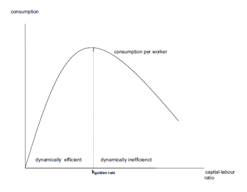

For this assignment, I have chosen to pick previous assignments from the course Generational Economics. Fearing that only one may have been too short, I will include the first and the second (out of a total of 6) assignment of this course. Both have mathematical derivations, but perhaps lack a few words.
Assume that production is described by \(Y=AK^a L^b\), A, a and b are positive constants
There are three conditions for a neoclassical function.
Condition 1: Constant returns to scale
\( \lambda Y = F(\lambda K,\lambda L)\)
\( \lambda Y = A*\lambda K^a*\lambda L^b\)
\( \lambda Y = A*\lambda ^{a+b}* K^a* L^b\)
\( \lambda Y = \lambda ^{a+b}F(\lambda K,\lambda L)\)
Thus, a+b=1
And similarly; b=1-a
Since a and b are positive constants, we know that:
\(0<a<1\)
\(0<b<1\)
Condition 2: Positive but diminishing returns
\[\frac{\delta F}{\delta K} = aAK^{a-1}L^{1-a} > 0\]
\[\frac{\delta ^2 F}{\delta K^2} = (a-1)aAK^{a-2}L^{1-a} < 0\]
\[\frac{\delta F}{\delta L} = aAK^{a}L^{-a} > 0\]
\[\frac{\delta ^2 F}{\delta L^2} = -a(1-a)AK^{a}L^{-a-1} < 0\]
Condition 3. Inada conditions
The marginal product of capital is
\[MPK = aAK^{a-1}L^{1-a}\]
\[= aA\frac{K}{L}^{a-1}\]
and thus \[\lim_{k\to\infty} aA \frac{K}{L}^{a-1} =0\]
\[\lim_{k\to 0} aA \frac{K}{L}^{a-1} = \infty\]
The marginal product of labour is
\[MPL = (1-a)AK^{a}L^{-a}\]
\[= (1-a)A\frac{K}{L}^{a}\]
and thus \[\lim_{k\to\infty} (1-a)A \frac{K}{L}^{a} =0\]
\[\lim_{k\to 0} (1-a)A \frac{K}{L}^{a} = \infty\]
In conclusion, all three requirements are fulfilled
Remember we can write the production function as
\[Y=AK^a L^{a-1}\]
Then, taking per labour efficiency units
\[\frac{Y}{L}= A \frac{K}{L}^{a} \frac{L}{L}^{a-1}\]
Or in other terms
\[y=Ak^a\]
Then the marginal product of k is:
\[f(k)=Ak^a\]
\[f'(k)=aAk^{a-1}\]
Taking that the economy starts off in a dynamically inefficient steady-state, it is located somewhere in the right hand side of the above graph.
If the rate of population growth increases, and holding investment per labor efficiency unit constant, we can state, from the equation in \(i=(\delta+g)k\), that capital-labor ratio will decrease (intuitively, it makes sense considering that population now grows quicker – and so will labor – while, for capital, we see no difference); graphically, this means that the steady-state will now be represented further to the left.
Given this, in the long-run, utility will increase as consumption increases, as the economy approaches its optimal capital-labor ratio.
However, it is important to denote that if the decrease in k is large enough, it could also lead to the Golden Rule capital-labor ratio being surpassed, which would lead to a less-than-optimal utility.
